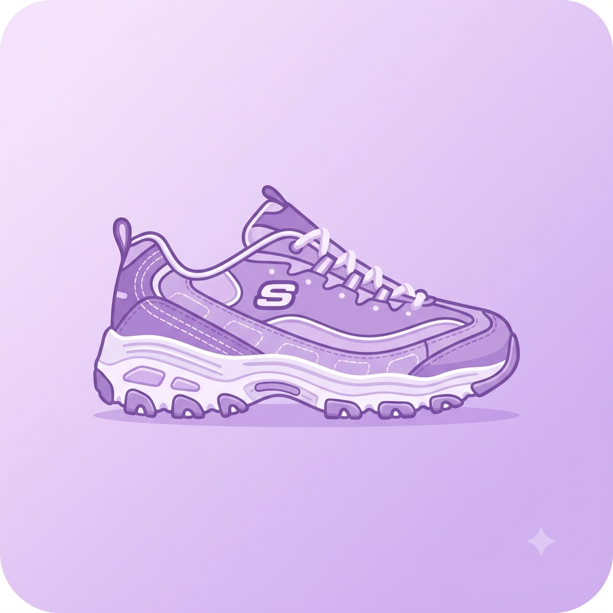
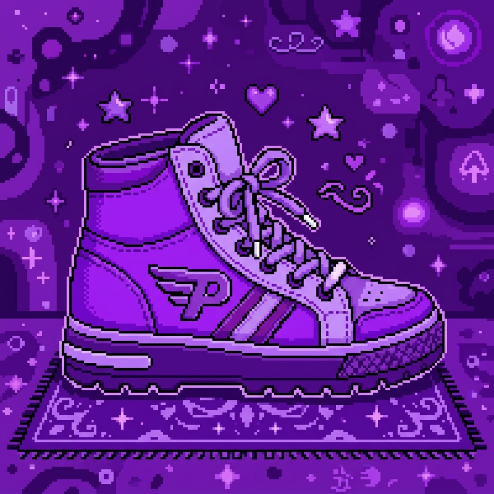

meu primeiro post
Por:Giovana Calicchio
boas vindas ao site da minha loja
site para compras de tenis

Por:Giovana Calicchio
boas vindas ao site da minha loja

Por:Giovana Calicchio
O tênis certo não é só o toque final do look: é o que define a energia do seu dia. 👟✨ Seja pra mandar aquele visual streetwear, garantir conforto na correria ou destacar o estilo no rolê, nosso catálogo foi pensado pra quem não aceita o básico.
Por:Giovana Calicchio
Tênis brabo pede uma meia à altura. 🧦✨ Quem vive na correria sabe que não adianta nada o tênis ser incrível se a meia incomodar. Nossas meias foram pensadas pra entregar o máximo de conforto: tecido super macio, toque suave na pele e o ajuste perfeito pra não enrolar no pé ao longo do dia.
fonte: The National Museum of Compunting